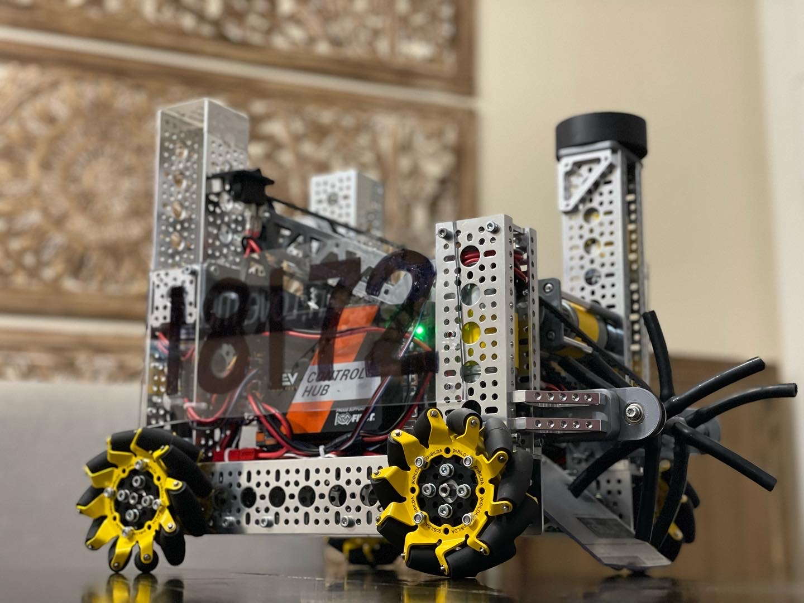
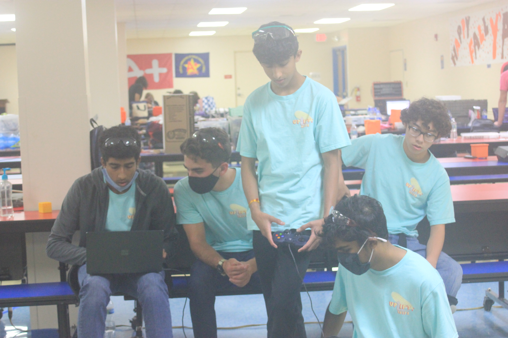
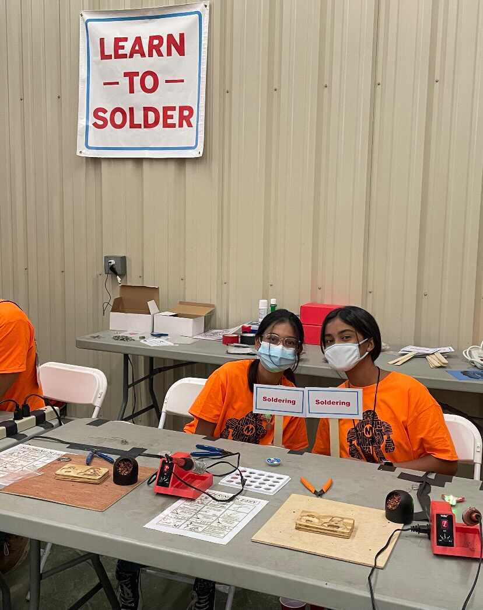
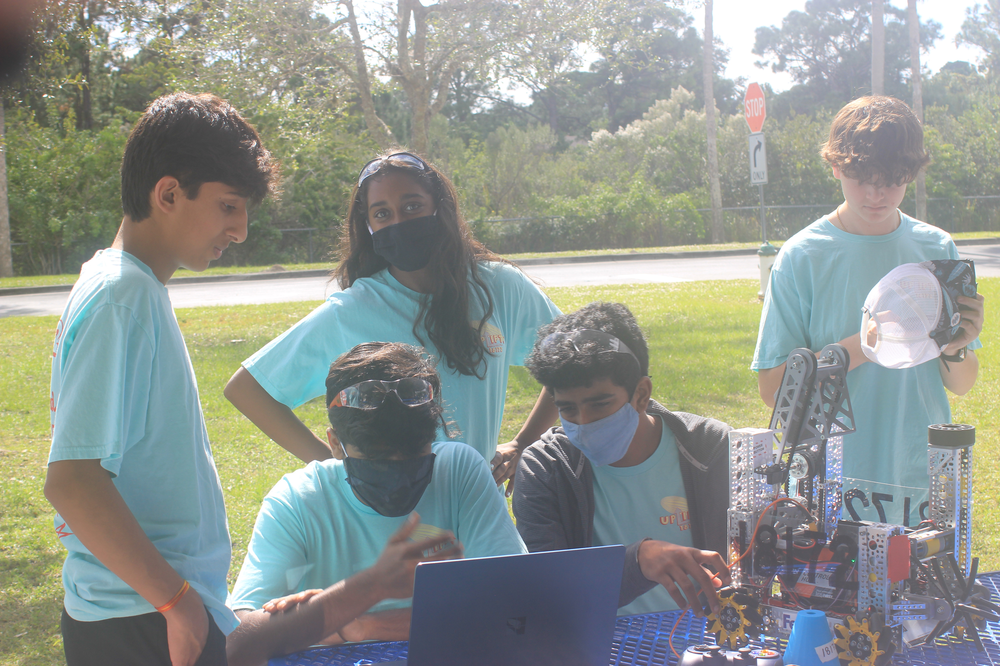
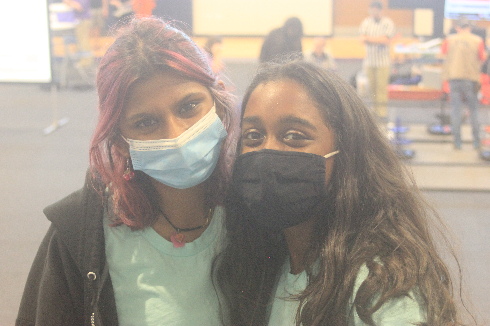

June 2022

Welcome to the first official newsletter for the 2021-2022 FTC season! A lot has happened since the last newsletter with everything from the robot design to the sustainability structure being rethought from the ground up. Lets get started!
Sustainability
hello

Outreach

So far this season we have focused our outreach on mentoring local FLL teams. We are mentoring a total of 4 teams: 10240 and 920 from Jackson Heights Middle School and 53320 and 52432 from Seminole Science Charter School. Currently, team 10240 and team 920 are preparing for their first Prequalifying competition. We have helped guide these teams by giving them experienced advice on how to improve their presentation, search for good evidence, and how to divide questions among the team to make sure those best suited to answering have the chance to answer. For team 53320 and team 52432, we have been going to their regular Saturday meetings and guiding them with any questions they may have. Specifically, we help them with programming and any parts of their project that need an experienced viewpoint. We also share our personal FLL stories and experiences with them so they can better understand FIRST. In addition to mentoring, we also attended Maker Faire, where 2 of our members volunteered and interacted with other FTC teams as well as a large STEAM community and got to see many FIRST exhibits. We volunteered to work at soldering training stations and helped set up booths. We also went around the area, looking at what people had set up and asking questions. Maker Faire was a great outreach experience and we hope to attend more events like this in the future. If you know of any events we should attend, whether an elementary school STEM night or a large corporate conference be sure to let us know!
Finances
We are happy to say that finance has been going well this season! Right now
we are in the process of filling out our 501c3, getting involved with sponsorships, and reaching out
to new companies.
This year we have a total of 13 sponsors, and we are most definitely hoping to increase this number,
so please reach out to us if you could help our team with a potential sponsorship! So far our
sponsors include: SendCutSend, FedEx, Verizon, Lockheed Martin, NASA Exploration Ground Systems,
BILDA, US Digital, SIEMENS Energy, IBM, and General Dynamics Mission Systems. We are grateful to be
working with our sponsors, and out of these we are excited to announce that our biggest grant this
season is a $2000 grant from FedEx!
Now let's talk about money! Our team has $2.5k from our previous season. We have earned $5.2k this
year and currently have $4k. This money is needed for transportation, competitions fees, robot
parts, and many other materials. So if you (or someone of your knowledge) is willing to sponsor and
give our team a huge helping hand, please contact us!
Editor's Note: The 501c3 is a big deal for us as we will be one of the only community teams
in central Florida running our own non-profit organization. With this, we hope to achieve greater
autonomy without the traditional dependency on another corporation most teams are restricted by.
Additionally, we are forming an independent organization to stay true to our roots of learning by
doing as it gives us the ability to have one elected team member on the board of the non-profit to
provide student input and learn about the legalities of running a business in Florida. Lastly, it
coincides with our focus on sustainability for this season as it forms an easy avenue to bring money
in year after year rather than having to beg for sponsorships that don't provide tax benefits as
most sponsors are looking for. We were officially incorporated in the last few weeks and are now
awaiting our non-profit status which we hope to earn in the first few weeks of next year.

Challenge video
Since this is our first newsletter of the 2021-2022 season, here is the challenge video if you have not seen it already! The game this year is called Freight Frenzy and is oriented around sustainable shipping and supply chain logistics.
Competition Summary

With widespread vaccination available to our competition's age group this year, in-person competitions are back! This meet started off with a late night of complications with our software but with the rocky start we got to a great finish. We were able to place 2nd overall in the Space Coast which is awesome for our first in person competition in team history. We have learned a few things especially when it comes to making sure our robot is ready and tested beforehand. We have also found simple things that will make our meets run smoother in the future such as packing preparations and lunch order forms to save time and stress on competition days. We have meet 2 coming up so we are hoping that we can do as well as we did for our last meet and become better adjusted to the competition format.
Robot Update
While the robot, as usual, didn't go exactly as planned, what we built was a
completely new approach for us as a team and one we have learned a lot from. Rather than building a
fully custom robot from day 1 like we did last season, we stuck with a primarily off the shelf
design due to time and resource constraints for our first meet. Everything we had to manufacture was
made in-house rather than outsourced which was a big savings and gave our members all a chance to
work on the robot as we had a longer to build due to shorter lead times. The robot did fantastic
finishing 2nd place at Meet 1 even with the several hours of struggles we faced the morning of the
competition that left our drivers with very literally no practice. A hat goes off to them for
driving in there first ever competition with no experience so good job there!
With this robot
nearly everything was built using GoBilda parts with the exception of the main scoring mechanism
which was primarily 3D printed. This made the robot remarkably easy to work on and very reliable due
to its simplicity. We've learned through this experience that having a basic robot this early in the
season can be a blessing as an easy platform to build off of and a convenient way to allow new
members to get their footing. In addition, we've discovered that having a reliable robot at early
meets can win you a lot of matches even if you don't out perform teams since most teams' robots
regularly break. Therefore, we will be continuing to use this robot due to similar circumstances at
meet 2 and we are excited to see where this robot takes us. By using the same robot, we can spend
more time on driver practice and give our brand new software team more time to develop their code
which are both things that will benefit us greatly in the long run on the topic of sustainability.
As of right now, we do plan to build a new robot between meet 2 and 3 but that could change
depending on what success comes from this robot at meet 2. More to come!

Summary
